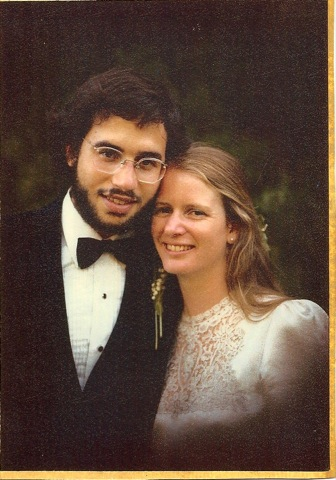

John and Cynthia's 30th Wedding Anniversary
Zydeco Dance Party and Pig Roast
Saturday, September 22, 2012
1:00 - 8:00 p.m.
Laurel Mill Lodge in the Santa Cruz Mountains
Pig Roast and BBQ (1:00pm-3:30pm)
Catered by Carmona's BBQ of Watsonville
Zydeco Dance (3:30pm-8:00pm)
Andre Thierry and Zydeco Magic
Around the Bon Fire (8:30pm-10:00pm)
Please join us to celebrate 30 years of marriage!
Bring a chair: Festival seating
B.Y.O.B.
(Please, No Gifts!)
Camping and Very Rustic Cabins available for rent on Saturday Night
Because our party will be catered we need a good estimate
of the number of guests. So please: let us know
if you would like to come!
Please RSVP by September 4th, in person or by email: 30th@johnjbarton.com
This is a private party. Sorry, No Pets.
For more information, maps, and directions: www.zydeco30th.info
Laurel Mill Lodge is a 27 acre rustic establishment nestled among towering trees in the Santa Cruz Mountains. It is located 2 1/2 miles from Highway 17, north of Scott's Valley.
This is a laid back sort of place where you can relax with friends, hike the property, watch the wildlife, soak in the hot tub, decompress in the sauna, and of course, PARTY! There is a large outdoor deck for dancing next to Soquel Creek and a large meadow for relaxing and tent camping. You are welcome to arrive early, and stay late, to enjoy the property.
For more information about the lodge, check out their website: www.laurelmilllodge.com
Both Highway 17 and the smaller roads to the Lodge can be challenging to drive. Please be sure to have a designated driver or hang out after the party before driving home.
Please allow extra travel time due to beach traffic going from Silicon Valley to Santa Cruz on nice weekends.
The overnight accommodations at Laurel Mill are rustic. There are "Cushy" Cabins, Dormatory style beds with sleeping bags, and Tent Camping in the meadow. All three options include continental breakfast.
The cushy cabins are very basic, just a small step above camping. They have a king size bed in a sleeping loft, and a half bath. Hot showers are available in the main building, along with a sauna. Cabins: $80.00 for one person. $100.00 for two person occupancy.
The dormatories are a half-step above camping! There are foam mattresses that can be topped with a sleeping bag. There are no restrooms are in the building. Dormatory: $25.00/person. (Sleeping Bag, sheet lined, for Dorm: $10.00 or bring your own.)
The large verdant meadow can be used for tent camping. There is a large bathroom close by with toilets, hot showers, and a large sauna. Tent Camping: $20.00/person
For reservations and more information please contact Laurel Mill Lodge directly: Call (408) 353-5851 or e-mail proprietors@laurelmilllodge.com
